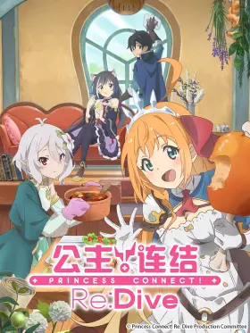
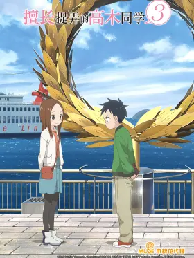
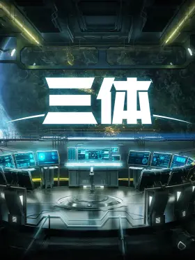

Lumina の Blog
首页
归档
音乐
番剧
游戏
留言板
时间轴
关于
x
1
1
1
没有未来的未来,不是我想要的未来
-- 境界的彼方
汉化日记 第三季
苏莫婷是一个带着“神妖之子”身份的社畜女青年，在被父母以“独立自强”为理由请出家门后，遇到了同样流落人间的二货帅气小萌神——天机星以及神秘沉稳酷猫妖——地魁。在土地的主导下，三人结成救世组合，开始上演搞笑而又扎心的无厘头日常。
凹凸世界 第四季
凹凸大赛将迎来尾声，众人也由此走向命运的分叉口。金终于获知了关于姐姐的消息，格瑞也走到了真相面前，鬼狐找到了大赛的漏洞联合了嘉德罗斯小队与雷狮海盗团，安迷修的骑士之道上出现了曾经的引路人，艾比带着曾经的记忆开始寻找创世神失踪的真相，而两位监督天使各自带着神使的任务暗中行事……

公主连结 Re:Dive
平静的风吹过美丽的大地——阿斯特莱亚大陆。在大陆的某个角落，失去记忆的少年佑树醒了过来。照顾他的小小指引者可可萝。总是饿肚子的美少女剑士佩可莉姆。有一点冷酷的猫耳魔法少女凯露。在命运的指引下，他们创立了名为“美食殿堂”的公会。现在，佑树和她们的冒险揭幕了。

擅长捉弄的高木同学 第三季
“捉弄”缩短了二人的距离。在一所初中里，有一个叫做西片的男生，他时不时就会遭到同桌女生高木的捉弄。西片每次思考对策，想要捉弄回高木，都会被高木看透。于是西片每天都绞尽脑汁，想要扳回一城…然而随着时间变化的不止是季节，还有西片的心境？看似占据优势的高木似乎也发生了让她动摇的事情...

三体
无数细线横亘在星空之中，如同一把巨大的刷子。三体星舰队将于400年后抵达。遥远蝴蝶扇动着翅膀，也改变了罗辑的命运，轰然打开的门后是世界中心——面壁计划开启。同时，智子所创建的破壁室内，破壁人一一就位……
ReLIFE
海崎新太（27岁）在作为新毕业生进入的公司工作了3个月就辞职了。之后他的就职活动也不顺利。双亲寄来的生活费也中断了，不得已只好回到乡下。穷途末路的海崎面前出现了一位神秘人物·夜明了...
Angel Beats!
故事从男主角死亡之后从“死后的世界”醒来开始，在“死后的世界”中的学校里，他与一位名为由利、在“死后的世界”率领着一个名为“死んだ世界战线”简称“SSS”的组织的少女相遇了。“SSS”成立的主要目的是与赐予他们生前悲哀命运的神以及神之使者——天使交战。就这样一场发生在“死后的世界”的学校里的超能大战物语开始了……
罗小黑战记
猫妖小黑盗取天明珠被谛听发现，被打回原形重伤而逃，在流落街头之时被罗小白带回了家，起名罗小黑。有一天小黑突然变成了人形，告诉小白自己要暂时离开去完成师父交给自己的任务。却在离开之后因为师父交给自己的任务又回到了小白身边，等待着他们的会是什么呢……
消灭都市
一天，某个都市突然消失, 这次事件被称为消失事件. 三年后，运输员拓也接到一项委托: 与消失事件中唯一生还的蓝发少女小雪一起，凭借着其父亲所发来的信息，前往失落之地. 但阻碍在两人面前的是已故之人的情感暗中活动的神秘组织还有隐藏的阴谋拓也和小雪，完全互不相识的两人在旅途中逐渐加深羁绊，逐步逼近消失事件的真相……